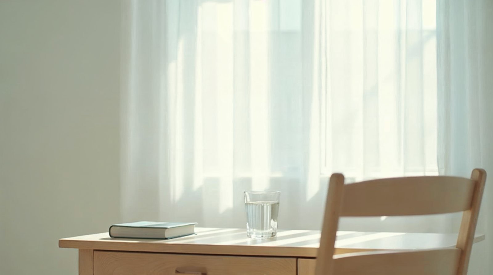
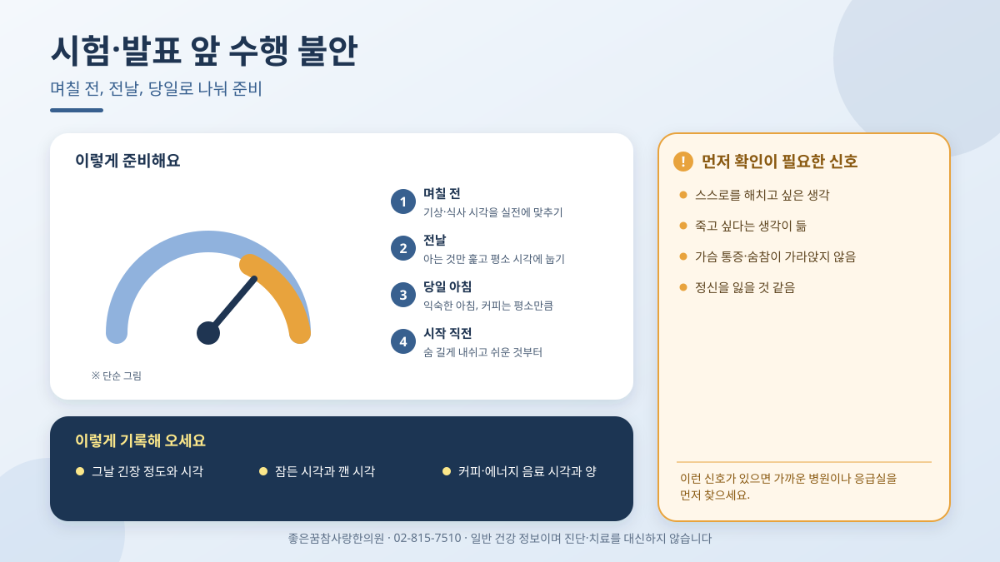

이종호 한의사 감수좋은꿈참사랑한의원 대표원장 (한의사 면허번호 19769)발행 2026-11-26 · 수정 2026-11-27
이 글의 차례
시험지가 책상 위에 놓이는 소리가 유난히 크게 들립니다. 첫 문제를 읽는데 글자가 눈에 들어오지 않고, 어젯밤까지 외웠던 내용이 하얗게 지워진 것 같습니다. 펜을 쥔 손에 땀이 배고, 심장 소리가 귀까지 울립니다. 진료실에서 "공부한 만큼만이라도 보여 주고 싶어요"라는 말씀을 들을 때면 그 마음이 얼마나 간절한지 느껴집니다.
발표도 마찬가지입니다. 연습할 때는 술술 나오던 문장이 사람들 앞에 서면 꼬이고, 레이저 포인터를 든 손이 떨려 화면 위 빨간 점이 흔들립니다. 그 떨림을 누가 볼까 봐 더 긴장하고, 결국 준비한 내용의 절반도 말하지 못하고 내려왔다는 분이 많습니다.
이렇게 중요한 순간에 실력만큼 보여 주지 못하게 만드는 긴장을 흔히 수행 불안이라고 부릅니다. 시험, 발표, 면접, 실기, 오디션처럼 결과가 평가되는 자리에서 주로 나타나고, 준비를 열심히 한 분일수록 더 크게 겪기도 합니다.
수행 불안은 어떤 모습으로 나타나나요?
수행 불안은 크게 세 가지 모습으로 나타납니다. 몸에서는 심장이 빨리 뛰고 손이 떨리며 땀이 나고, 입이 마르거나 속이 울렁거립니다. 머리에서는 생각이 멈춘 듯 하얘지거나, 반대로 걱정이 너무 빨리 돌아 집중이 흩어집니다. 행동에서는 서두르거나 말을 더듬고, 시간을 잘못 배분합니다.
이 세 가지가 서로를 부추기기도 합니다. 손이 떨리는 것을 느끼는 순간 '망했다'는 생각이 들고, 그 생각이 심장을 더 빨리 뛰게 하며, 그러다 보니 문제를 읽는 속도가 느려집니다. 고리의 어느 한 곳만 느슨하게 만들어도 전체가 조금 가라앉을 수 있습니다.
긴장이 오는 시점도 사람마다 다릅니다. 몇 주 전부터 걱정이 쌓이는 분, 전날 밤에 몰아서 오는 분, 당일 자리에 앉는 순간 터지는 분이 있습니다. 내 긴장이 언제 가장 크게 오는지 알면 그 시점에 맞춰 준비할 수 있습니다.
왜 중요한 순간에 머리가 하얘질까요
위험을 느끼면 우리 몸은 심장 박동을 올리고 근육에 피를 보내며 도망치거나 맞설 준비를 합니다. 이때 차분하게 생각하고 기억을 꺼내는 일은 잠시 뒤로 밀립니다. 시험지 앞에서 머리가 하얘지는 것은 몸이 시험을 맹수처럼 받아들여 생각보다 도망칠 준비를 먼저 하고 있기 때문입니다.
적당한 긴장은 오히려 집중을 돕습니다. 문제는 긴장이 너무 일찍 시작해 너무 오래 이어지거나, 너무 크게 울리는 경우입니다. 며칠 동안 이어진 걱정으로 잠이 부족하면 경보 장치가 더 예민해져, 작은 신호에도 크게 반응하게 됩니다.
'이번에 꼭 잘해야 한다'는 마음의 무게도 큰 몫을 합니다. 한 번의 결과에 많은 것이 걸려 있다고 느낄수록, 몸은 그 자리를 더 위험하게 받아들입니다. 과거에 중요한 자리에서 실수했던 기억이 있다면, 비슷한 상황에서 그 기억이 먼저 떠오르기도 합니다.
커피와 에너지 음료도 자주 놓치는 요인입니다. 시험 기간에 카페인을 평소보다 많이 드시면 심장이 이미 빨리 뛰는 상태에서 시험장에 들어가게 됩니다. 몸이 느끼는 두근거림이 긴장 때문인지 카페인 때문인지 구분하기 어려워 불안이 더 커지기도 합니다.
일상의 긴장, 사회불안과는 어떻게 다른가요
시험 전에 조금 떨리고, 첫 문제를 풀고 나면 차츰 풀리는 정도라면 자연스러운 긴장입니다. 수행 불안은 그 떨림이 시작부터 끝까지 이어지거나, 준비한 실력을 눈에 띄게 가로막을 만큼 큰 경우를 말합니다.
사회불안은 평가받는 자리뿐 아니라 인사, 전화, 식사 자리처럼 사람을 마주하는 여러 장면에서 긴장이 옵니다. 수행 불안은 시험이나 발표처럼 결과가 드러나는 특정한 자리에 긴장이 모여 있다는 점이 다릅니다. 두 가지가 겹치는 분도 계셔서 장면을 나눠 여쭙니다.
공황처럼 숨이 막히고 쓰러질 것 같은 발작이 시험장 밖에서도 갑자기 찾아온다면, 수행 불안과는 다른 흐름일 수 있습니다. 이 경우에는 미루지 말고 진료로 함께 살펴보시길 권합니다.

내 긴장을 스스로 점검해 보기
아래 항목 가운데 나에게 해당하는 것을 세어 보세요. 진단이 아니라 진료실에서 이야기를 시작할 실마리입니다.
- 시험이나 발표 며칠 전부터 잠들기 어렵다
- 당일 아침에는 입맛이 없거나 속이 울렁거린다
- 자리에 앉으면 손이 떨리거나 땀이 난다
- 아는 내용인데도 머리가 하얘진 적이 여러 번 있다
- 연습 때보다 실전에서 결과가 크게 떨어진다
- 끝난 뒤에도 실수한 장면이 오래 떠오른다
해당하는 항목이 많고 이런 상태가 시험이나 발표 때마다 되풀이된다면, 혼자 견디기보다 몸과 마음을 함께 살펴보시길 권합니다.
며칠 전, 전날, 당일로 나눠 준비하기
긴장은 당일에만 다루려고 하면 이미 늦은 경우가 많습니다. 시기를 나눠 준비하면 몸의 경보가 덜 예민한 상태로 그날을 맞이할 수 있습니다.
며칠 전에는 잠과 식사 시각을 실전에 맞춰 두는 것이 가장 중요합니다. 시험이 아침이라면 일주일 전부터 그 시각에 머리가 깨어 있도록 기상 시각을 맞추세요. 밤샘 공부는 기억을 정리하는 잠을 빼앗아, 다음 날 긴장을 더 키울 수 있습니다.
전날에는 새로운 내용을 붙잡기보다 이미 아는 것을 가볍게 훑는 정도가 좋습니다. 저녁은 평소 드시던 익숙한 음식으로 과하지 않게 드시고, 따뜻한 물로 샤워한 뒤 평소 시각에 잠자리에 드세요. 잠이 오지 않아도 누워서 눈을 감고 쉬는 시간은 몸에 쉼이 됩니다.
당일 아침은 평소 먹던 가벼운 아침을 드시고, 커피는 평소 양보다 늘리지 않습니다. 시험장이나 발표장에는 조금 일찍 도착해 자리와 분위기에 몸을 익히세요. 시작 직전에는 숨을 길게 내쉬는 호흡을 몇 번 하고, 첫 문제나 첫 문장은 가장 자신 있는 것으로 시작하면 몸이 덜 놀랍니다.
발표나 면접을 앞둔 직장인이라면
직장에서의 발표는 시험과 조금 다릅니다. 듣는 사람이 매일 마주치는 동료와 상사이고, 질문이 어디로 튈지 모른다는 점이 긴장을 더합니다. 그래서 내용 연습만큼 첫 1분을 통째로 외워 두는 것이 도움이 됩니다. 시작이 매끄러우면 몸의 경보도 가라앉기 쉽습니다.
예상 질문을 미리 적고 짧게 답해 보는 연습도 권합니다. 모든 질문에 완벽히 답하려 하기보다 "확인해서 따로 말씀드리겠습니다"라는 문장 하나를 준비해 두면, 모르는 질문 앞에서도 덜 당황하게 됩니다.
면접은 몇 분 안에 나를 보여 줘야 한다는 부담이 큽니다. 대기실에서 다른 지원자와 비교하며 긴장을 키우기보다, 어깨를 내리고 숨을 길게 내쉬며 내가 준비한 첫 문장만 떠올려 보세요.
시험이나 발표가 끝난 뒤에는
긴장이 큰 자리를 마치고 나면 며칠 동안 몸살처럼 기운이 빠지는 분이 많습니다. 오래 버티던 몸이 한꺼번에 풀리면서 생기는 흐름입니다. 이때는 바로 다음 일정을 몰아넣기보다 하루쯤 잠과 식사를 회복하는 시간을 주세요.
끝난 뒤 실수한 장면만 되감아 보는 것도 흔한 일입니다. 되짚기를 하더라도 '다음에 바꿔 볼 것 하나'만 적고 덮어 두세요. 잘한 점도 하나 함께 적어 두면, 다음 자리를 준비할 때 몸이 기억하는 것이 실수만은 아니게 됩니다.
먼저 이렇게 여쭙니다
처음 오시면 저는 대략 이런 순서로 여쭙니다. 미리 생각해 오시면 이야기가 수월해집니다.
- 어떤 자리에서 긴장이 가장 크게 오나요? 시험, 발표, 면접 가운데 어디인가요?
- 긴장은 며칠 전, 전날, 당일 가운데 언제 가장 크게 오나요?
- 몸에서는 무엇이 먼저 나타나나요? 손, 심장, 속, 머리 가운데 어디인가요?
- 시험이나 발표를 앞두고 잠은 어떠신가요?
- 커피, 에너지 음료, 영양제는 얼마나 드시나요?
- 다가오는 시험이나 발표는 언제인가요?
날짜를 알려 주시면 그 날까지 남은 시간에 맞춰 무엇을 먼저 살필지 함께 정할 수 있습니다. 날짜가 촉박할수록 잠과 식사 리듬을 먼저 맞추는 쪽에 무게를 둡니다.
일상에서 먼저 해 볼 수 있는 것
- 숨을 4초 들이쉬고 6초 내쉬기를 하루 두 번, 다섯 번씩 연습하기
- 실전과 비슷한 조건에서 시간을 재며 모의 연습하기
- 발표는 가족이나 친구 앞에서 소리 내어 한 번 이상 해 보기
- 시험 기간 커피는 오후 2시 이후 줄이기
- 잠드는 시각과 깨는 시각을 실전에 맞춰 일정하게 하기
- 긴장할 때 떠오르는 생각을 종이에 적어 보기
호흡 연습은 긴장했을 때 처음 해 보면 잘 되지 않습니다. 평소 편할 때 몸에 익혀 두어야 실전에서 저절로 나옵니다. 하루 두 번, 1분씩이면 충분합니다.
시험 직전에 걱정을 종이에 적는 방법도 도움이 됩니다. '틀리면 어쩌지', '시간이 모자라면 어쩌지' 같은 생각을 몇 분 동안 적어 내려가면, 머릿속에서 걱정이 차지하던 자리가 조금 비워지는 느낌을 받는 분이 많습니다.
손 떨림이 걱정이라면 손을 따뜻하게 해 두세요. 시험장이나 발표장이 추우면 손이 차가워지면서 떨림이 더 커지기 쉽습니다. 따뜻한 음료를 손에 쥐고 있거나, 주먹을 꽉 쥐었다 펴기를 몇 번 하면 손에 피가 돌면서 조금 편해집니다.
긴 시험이라면 쉬는 시간 쓰는 법도 미리 정해 두세요. 끝난 과목의 답을 맞춰 보기보다 자리에서 일어나 어깨를 돌리고, 물을 조금 마시고, 다음 과목의 첫 장만 훑어보는 식입니다.
한의원에서 함께 살필 수 있는 경우
- 시험이나 발표 며칠 전부터 잠을 설치고 꿈이 많은 경우
- 긴장하면 가슴이 두근거리고 얼굴로 열이 오르는 경우
- 중요한 날마다 속이 울렁거리거나 배가 아파 화장실을 자주 찾는 경우
- 긴 시험 준비로 목과 어깨가 굳고 머리가 무거운 경우
- 긴장한 뒤 며칠씩 기운이 빠지고 몸살처럼 아픈 경우
좋은꿈참사랑한의원에 오시면 모든 분의 맥을 먼저 짚고, 손발의 온도, 목과 어깨의 굳은 정도, 잠과 소화 상태를 함께 확인합니다.
진찰한 내용을 바탕으로 생활에서 바꿔 볼 것 하나와 함께 침, 온열 관리, 한약 상담 가운데 지금 상태에 맞는 것을 정합니다. 시험이나 발표 날짜가 가까우면 새로운 것을 시작하기보다 몸에 익숙한 방법을 먼저 고릅니다. 한약을 상의할 때는 드시는 약을 모두 확인하고 신중하게 정합니다.
긴장이 생활 전반으로 번지거나 시험과 상관없이 불안이 이어진다면 그 이야기도 진료 때 함께 말씀해 주세요. 처방받은 약은 처방한 선생님과 상의 없이 멈추지 않습니다.
이렇게 기록해 오시면 상담이 쉬워집니다
긴장은 날마다 크기가 다릅니다. 시험이나 발표 2주 전부터 간단히 적어 보세요.
- 그날 긴장 정도(0~10점)와 가장 크게 느낀 시각
- 몸에서 나타난 반응
- 잠든 시각과 깬 시각, 밤에 깬 횟수
- 커피와 에너지 음료를 드신 시각과 양
- 모의 연습을 한 날과 그때의 느낌
기록을 나란히 놓으면 잠을 설친 다음 날 긴장이 더 컸는지, 연습을 한 날은 덜했는지가 보입니다. 그 연결이 남은 기간의 준비를 정하는 실마리가 됩니다.
긴장과 함께 가는 연습
긴장을 0으로 만드는 것은 목표가 아닙니다. 적당한 긴장은 집중을 돕고, 준비한 것을 꺼낼 힘이 되기도 합니다. 우리가 바라는 것은 긴장이 실력을 가로막지 않을 만큼의 크기로 머무는 것입니다.
그 크기는 한 번에 달라지지 않습니다. 모의 연습, 호흡, 잠과 식사 리듬을 몇 주 이어 가다 보면, 어느 날 시험지 앞에서 손이 조금 덜 떨리는 것을 알아차리는 분도 있습니다. 그 작은 차이를 알아차리는 것부터 시작해 보세요.
이번 주에는 실전과 같은 시각에 한 번, 시간을 재며 모의 연습을 해 보세요. 다음에 오시면 그날의 긴장 점수와 잠 기록부터 함께 펼쳐 보겠습니다.
이런 증상은 먼저 확인이 필요합니다
- 스스로를 해치고 싶거나 죽고 싶다는 생각이 들면 ☎ 109로 바로 연락하세요.
- 가슴 통증이나 숨참이 쉬어도 가라앉지 않거나, 정신을 잃을 것 같은 경우
이런 신호가 있으면 한의원보다 가까운 병원이나 응급실을 먼저 찾으세요.
함께 읽으면 좋은 글
- 시험을 앞두고 미리 불안해질 때는 어떤 루틴이 도움이 되나요?
- 시험 전날 저녁은 어떻게 보내면 컨디션을 지키는 데 도움이 되나요?
- 시험 당일 아침 식사와 카페인은 어떻게 계획하면 되나요?
- 공무원 면접을 앞두고 긴장으로 목소리가 떨릴 때는 어떻게 하나요?
- 불안한 마음과 몸이 긴장한 느낌은 어떻게 나눠서 이야기하나요?

여쭙는 것
- 어떤 자리에서 긴장이 가장 크게 오나요? 시험, 발표, 면접 가운데 어디인가요?
- 긴장은 며칠 전, 전날, 당일 가운데 언제 가장 크게 오나요?
- 몸에서는 무엇이 먼저 나타나나요? 손, 심장, 속, 머리 가운데 어디인가요?
생활에서 해 볼 것
- 숨을 4초 들이쉬고 6초 내쉬기를 하루 두 번, 다섯 번씩 연습하기
- 실전과 비슷한 조건에서 시간을 재며 모의 연습하기
- 발표는 가족이나 친구 앞에서 소리 내어 한 번 이상 해 보기
한의원에서 함께 살필 것
- 시험이나 발표 며칠 전부터 잠을 설치고 꿈이 많은 경우
- 긴장하면 가슴이 두근거리고 얼굴로 열이 오르는 경우
- 중요한 날마다 속이 울렁거리거나 배가 아파 화장실을 자주 찾는 경우
먼저 확인이 필요한 신호
- 스스로를 해치고 싶거나 죽고 싶다는 생각이 들면 109로 바로 연락하세요.
- 가슴 통증이나 숨참이 쉬어도 가라앉지 않거나, 정신을 잃을 것 같은 경우
한눈에 보는 표
| 구분 | 핵심 |
|---|---|
| 여쭙는 것 | 어떤 자리에서 긴장이 가장 크게 오나요? 시험, 발표, 면접 가운데 어디인가요? 긴장은 며칠 전, 전날, 당일 가운데 언제 가장 크게 오나요? |
| 생활에서 해 볼 것 | 숨을 4초 들이쉬고 6초 내쉬기를 하루 두 번, 다섯 번씩 연습하기 실전과 비슷한 조건에서 시간을 재며 모의 연습하기 |
| 한의원에서 함께 살필 것 | 시험이나 발표 며칠 전부터 잠을 설치고 꿈이 많은 경우 긴장하면 가슴이 두근거리고 얼굴로 열이 오르는 경우 |
| 먼저 확인이 필요한 신호 | 스스로를 해치고 싶거나 죽고 싶다는 생각이 들면 109로 바로 연락하세요. 가슴 통증이나 숨참이 쉬어도 가라앉지 않거나, 정신을 잃을 것 같은 경우 |
자주 묻는 질문
시험 전날 잠이 안 오면 어떻게 하나요?
잠이 오지 않아도 누워서 눈을 감고 쉬는 시간은 몸에 쉼이 됩니다. 억지로 자려고 애쓰기보다 불을 낮추고 숨을 길게 내쉬며 쉬어 보세요.
긴장을 줄이려고 시험 직전에 한약을 처음 먹어도 되나요?
처음 드시는 약은 몸이 어떻게 반응할지 미리 알기 어려워서, 날짜가 촉박하다면 익숙한 방법을 먼저 권합니다. 한약은 진찰 뒤 드시는 약을 확인하고 신중하게 정합니다.
손 떨림이 심한데 발표를 할 수 있을까요?
손을 따뜻하게 하고, 손에 무언가를 쥐거나 단상에 손을 올려 두면 떨림이 덜 드러납니다. 듣는 사람은 내가 느끼는 만큼 떨림을 알아채지 못하는 경우가 많습니다.
시험 기간에 커피를 끊어야 하나요?
갑자기 끊으면 두통이나 졸음이 올 수 있어 줄이는 쪽을 권합니다. 오후 2시 이후에는 피하고, 시험 당일에는 평소 양보다 늘리지 않으시면 됩니다.
좋은꿈참사랑한의원은 재진 때 지난번 이야기부터 이어서 여쭙니다. 진료시간과 예약은 오시는 길에서 확인하세요.
어디서 상담받을 수 있나요?
좋은꿈참사랑한의원은 서울 동작구 만양로2길 2 신성빌딩 3층·5층(서울 동작구 상도동, 7호선 상도역 3번 출구 근처)에 있습니다. 한의사 3명(이종호 대표원장, 조영기 수석진료원장, 정원영 진료원장)이 진료합니다. 진료시간은 평일 09:30~20:00(점심 13:00~14:00), 토·일·공휴일 09:30~15:00이며, 방문 전 전화로 확인을 권합니다. 예약은 네이버 예약, 카카오톡 상담, 전화 02-815-7510로 받습니다.
이 글은 일반적인 건강 정보이며 개인의 진단이나 치료를 대신하지 않습니다. 증상이 있거나 복용 중인 약이 있다면 진료를 통해 확인하세요. 치료 효과는 개인마다 다를 수 있습니다.
작성 기준: 일반적으로 알려져 있는 건강 정보를 참고해 정리했습니다(대표원장 감수). 증상 기록은 1~2주 동안 하루 1회, 비슷한 시간에 적어 오시면 지난 상태와 비교하기 쉽습니다.